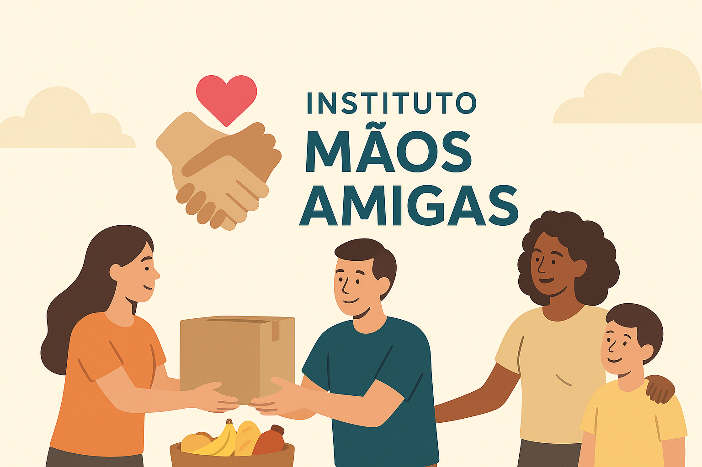
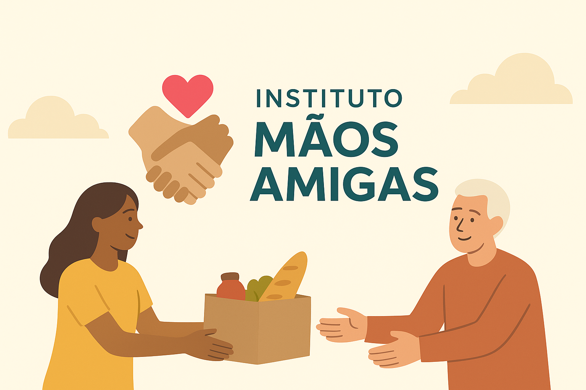
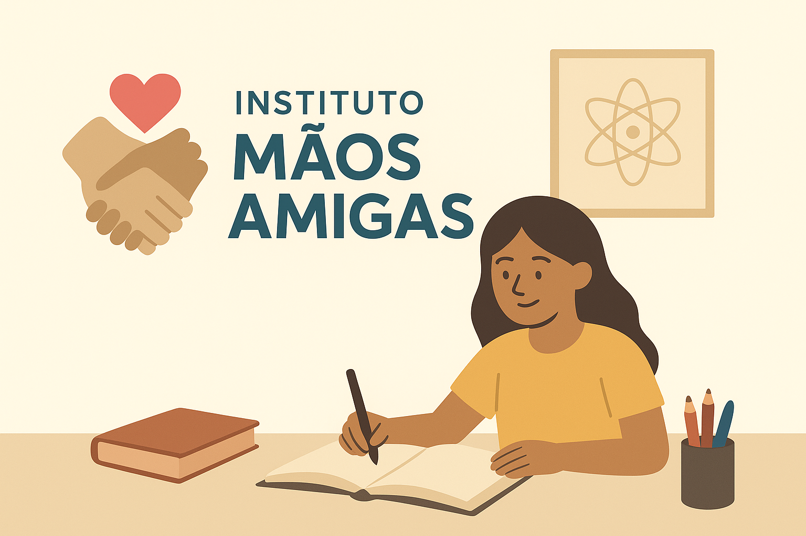

Doações Financeiras
As doações financeiras ajudam a manter nossos projetos ativos. Você pode doar via PIX, transferência bancária ou em nossa sede.
O Instituto mãos amigas atua em diversas frentes de apoio social, buscando transformar vidas por meio da solidariedade e do voluntariado.
O Projeto Alimenta distribui cestas básicas e refeições a famílias em situação de vulnerabilidade. Com a ajuda de doações e voluntários, conseguimos atender centenas de pessoas todos os meses.
Nosso projeto educacional oferece reforço escolar gratuito e oficinas culturais para crianças e adolescentes. Acreditamos que a educação é o caminho para um futuro melhor.
Você pode contribuir com doações, voluntariado ou divulgação dos nossos projetos. Cada gesto faz a diferença!
As doações financeiras ajudam a manter nossos projetos ativos. Você pode doar via PIX, transferência bancária ou em nossa sede.
Inscreva-se na página de Cadastro e participe das nossas ações presenciais.